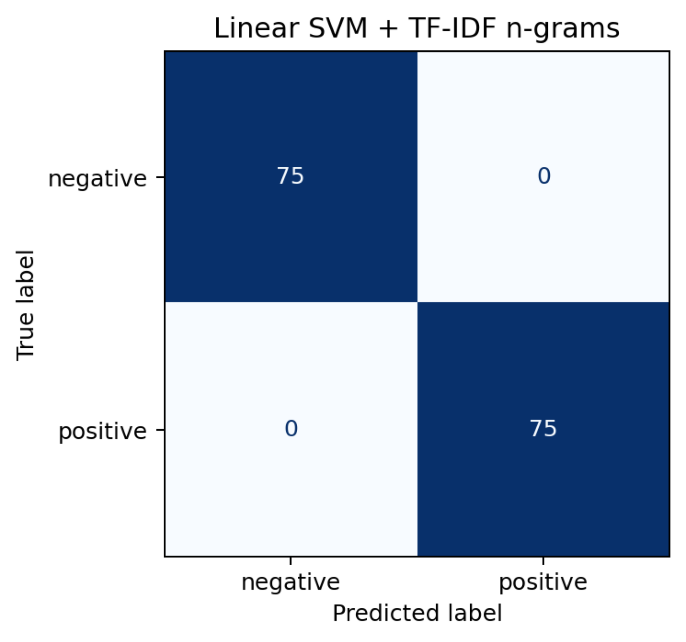

NLP / machine learning
Amazon Review Sentiment Triage
An NLP classification project that auto-flags negative Amazon Health & Personal Care reviews so customer success teams can prioritize follow-up.

Problem
Brands receive more reviews than teams can manually read, so negative reviews and product-quality signals can be missed.
What I Built
- Prepared binary sentiment labels by mapping 4-5 star reviews to positive and 1-2 star reviews to negative while dropping noisy 3-star reviews.
- Compared Bag-of-Words, TF-IDF, n-grams, Logistic Regression, Linear SVM, and Random Forest models.
- Framed the primary business metric as negative-class recall because missing unhappy customers is more costly than false alerts.
Evidence
- 346,355 raw reviews and 313,101 labeled reviews after preprocessing.
- Modeled on a 30,000-review sample with documented class imbalance.
- Generated model results, top features, EDA summary, and confusion-matrix outputs.
Tech Stack
PythonJupyterPandasscikit-learnTF-IDFn-gramsLogistic RegressionLinear SVMRandom Forest